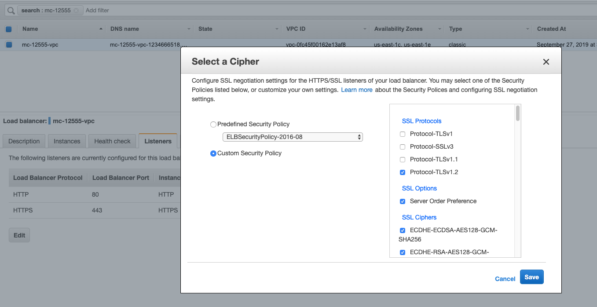

Moving a FedRAMP Site without Acquia Cloud Shield
This procedure guides you through moving a site from one stack of servers to another.
Requirements
In order for FedRAMP customer sites to meet all of the latest requirements, the following things are all necessary:
-
The site must be in a shared FedRAMP VPC.
-
All instances must be 4-series hardware.
-
All servers must have FIPS mode enabled. Note: while webs, bals, and fs-only servers can have FIPS mode enabled during a relaunch, database servers cannot. A site move is mandatory to move onto new database servers that are launched with FIPS mode from the very start. Check if the hardware is already FIPS enabled with this runbook.
-
If the customer has an ELB, the ELB's back-end instances must have IPv6 addresses. See the Verification section to check this.
-
If the customer does not have an ELB, one must be added.
-
The customer must have dedicated balancers.
-
Balancers must be configured to use TLSv1.2 only. See the Verification section to check this.
-
Shield Access Control needs to be enabled. See the Verification section to check this under “Network Boundaries”.
VPC
FedRAMP customers must be in a shared FedRAMP VPC, unless they have Acquia Cloud Shield.
Site Factory site layout
Site Factory site moves, such as in the enterprise-g1 realm, have some noteworthy differences from site moves in ACE:
- Site Factory sites are comprised of several sitegroups which cannot be moved independently of one another.
- ELBs in Site Factory have extra requirements
- Create a DG ticket after the site move is completed.
Since it is required to move all sites in a Site Factory, it is helpful to understand the sitegroup/sites on a typical site factory: https://ops.acquia.com/doc/index.php/Procedures/Provision_%26_Deprovision/Provisioning_Gardens.
esl ${CUSTOMERNAME}%
Each Site Factory has three sitegroups, ${CUSTOMERNAME}, ${CUSTOMERNAME}sf, and ${CUSTOMERNAME}theme.
These sitegroups are often on separate stacks, so spend time tracking down all of the hardware.
Within those sitegroups you will see sitenames such as ${CUSTOMERNAME}01live, ${CUSTOMERNAME}01update,
${CUSTOMERNAME}01theme, etc. Note some older site factories may add an underscore, i.e. ${CUSTOMERNAME}_sf.
Identify all sitegroups, sites, and hardware before beginning the site move.
Provisioning New Hardware
-
In order to be FIPS compliant, all servers must be on series 4 hardware. If you are not provided with an existing list of ami types for the new hardware, find equivalent series 4 ami's: https://ec2instances.info/?filter=c4|m4.
-
Follow the FIPS server provisioning runbook to provision FIPS-mode servers to move the site to.
Preparation
The following prep work should be completed before the site move is executed:
-
Verify that the site and destination servers are in the same region. If the regions differ, then balancers and VCS repos must move to the new region as well.
SRC_SITE= DST_FS_SERVER= DST_DB_SERVER= SRC_SRV=$(ah-server list site:${SRC_SITE} -w type!=svn| tail -1) ah-server list ${SRC_SRV},${DST_FS_SERVER} -c ec2_region --no-name | paste -s \ | awk '$1 != $2 { exit 1; }' && echo "Regions match" || echo "WARNING: Regions do not match" -
Verify that the destination server has enough disk space to accommodate the new site. This is a hard stop point if this check does not pass.
site-movevolusage ${SRC_SITE} ${DST_FS_SERVER} ${DST_DB_SERVER}Additionally, if the destination hardware does not exist yet, run the above as follows (with destination sizes):
site-movevolusage ${SRC_SITE} ${DST_FS_SIZE} [e.g. 10G or 10240M] ${DST_DB_SIZE} [e.g. 10G or 10240M] -
If the site is moving to servers in a different region and it has an ELB then verify that the key and cert are on the gluster volume at
/mnt/gfs/${SITE}/ssl. If they are not, assign the ticket to the reporter, set to Waiting for Feedback, and ask that the files be provided at that path. -
EIPs cannot move between regions, so the customer needs to whitelist any new webnode EIPs before the site move can go forward.
Procedure
Use the site move workflow to move the site to the new hardware. There is now a pre-sync step to minimize downtime.
Important Note
Do not abort workflows!
- If you are unable to resolve a problem with a workflow, raise the incident to Ops Management for approval to escalate it to Cloud through Ops Portal:
- Use this list of components to identify which Cloud team to assign it to:
Syncing Data Prior to Downtime
The site move workflow can be used in such a way that the majority of a site's data can be rsynced onto the new
hardware before the site is actually transferred. This "pre-rsync" does not require downtime and can shorten the
total required downtime for switching hardware. To do this, simply pause the workflow at the step update_site_location_within_the_hosting_api.
--pause-at-step=update_site_location_within_the_hosting_api
The step which executes the pre-rsync is called pre_migrate_site_files.
Varriables
Set variables for the SITE to be moved, the lowest-numbered destination DB server, space-separated lists of
destination WEBS and BALS, and the OP ticket.
SITE=
DB=
WEBS=()
BALS=()
OP=
WEBS_CSV=$(array-csv ${WEBS[@]})
BALS_CSV=$(array-csv ${BALS[@]})
Migrating EIP of dedicated bals - PLEASE READ THIS CAREFULLY
This section only applies for Non-ELB sites which have dedicated bals: bals which host only have one prod site or more than one prod site for the same customer and all of these sites will be moved to new bal pair in FedRamp VPC. If the maintenance is for sites having ELB/s or sites that live on shared bals or for sites for which old bals will still have some sites that are not going to be moved to the new hardware in FedRamp VPC after this maintenance, there should already be a separate plan in place that you should have knowledge of before proceeding with the maintenance. This runbook does not yet have instructions for these cases so figure the DNS update part out before proceeding for the cases just mentioned.
The following variables should be set before the site move is done.
OLD_BALS=<CSV Current Bals for the Site/s>
OLD_BAL_EIP=$(ah-server list $OLD_BALS -w eip_id!=nil --no-name -c external_ip)
OLD_BAL_WITH_EIP=$(ah-server list $OLD_BALS -w eip_id!=nil)
NEW_BALS=${BALS_CSV}
NEW_BAL_EIP=$(ah-server list $NEW_BALS -w eip_id!=nil --no-name -c external_ip)
NEW_BAL_WITH_EIP=$(ah-server list $NEW_BALS -w eip_id!=nil)
Copy the output of the following into the OP ticket and use these for variable re-population if you have to do that later after site-move.
echo -e "
{code:title=variables for bal eip switch over}
OLD_BAL_EIP=${OLD_BAL_EIP}
OLD_BAL_WITH_EIP=${OLD_BAL_WITH_EIP}
NEW_BAL_EIP=${NEW_BAL_EIP}
NEW_BAL_WITH_EIP=${NEW_BAL_WITH_EIP}
{code}"
The commands below will be used later for the EIP switch-over. Copy the output of the following to the OP ticket
echo -e "
{code:title=EIP switch over commands - run them after them site moves}
ah-elastic-ip remove $OLD_BAL_EIP $OLD_BAL_WITH_EIP
ah-elastic-ip remove $NEW_BAL_EIP $NEW_BAL_WITH_EIP
ah-elastic-ip add $OLD_BAL_EIP $NEW_BAL_WITH_EIP
ah-elastic-ip add $NEW_BAL_EIP $OLD_BAL_WITH_EIP
{code}"
Home directory copy commands
These commands are generated now but executed later after site-move for moving customer's home directory contents. Copy these to the OP ticket to be run after the site-move is done
while true; do
SRC=$(ah-server list site:${SITE} -w typeINded,fs,fsdb,fsdbmesh,staging | head -1)
DST_FS_CLUSTER_ID=$(ah-server list ${WEBS_CSV} --no-name -c fs_cluster_id | head -1)
DST=$(ah-server list % -w typeINded,fs,fsdb,fsdbmesh,staging fs_cluster_id=${DST_FS_CLUSTER_ID} | head -1)
SITEGROUP=$(ah-site list ${SITE} --no-name -c sitegroup)
SITEGROUP_UID=$(ah-sitegroup list ${SITEGROUP} --no-name -c unix_uid)
echo "{code:title= Move $SITE home directory content from $SRC to $DST}"
echo "fssh ${DST} 'sudo mkdir -m755 /mnt/gfs/home'"
echo "sv-rsyncfile -o avPu ${SRC}:/mnt/gfs/home/${SITEGROUP}/ ${WEBS[0]}:/mnt/gfs/home/${SITEGROUP}/"
echo "fssh ${DST} 'sudo chown -Rh ${SITEGROUP_UID}:${SITEGROUP_UID} /mnt/gfs/home/${SITEGROUP}'"
echo "{code}"
echo
echo 'COPY THE ABOVE OUTPUT TO JIRA TICKET AND EXECUTE THEM LATER AFTER THE SITE MOVE AS LAST STEP'
break
done
Site Move
-
Start the workflow to move the site. Omit any parameters which are not being changed (i.e. if the site is keeping its current balancers). Add a pause if desired.
ah-site move ${SITE} --webs ${WEBS[@]} --bals ${BALS[@]} --db ${DB} --force -
Once the workflow is completed, if the old webs or deds have EIPs, move them to the new webs/deds.
ah-server help migrate-eip Usage: ah-server migrate-eip --destination-server-name=DESTINATION_SERVER_NAME --source-server-name=SOURCE_SERVER_NAME # Note. Classic Elastic IPs need to be allocated 24 hours before moving them which is a hard AWS restriction. -
Switch over the bal EIPs using commands that we got from the Migrating EIP of dedicated bals section above.
-
As a last step, move the contents of the customer's home directory using the commands we generated above before the site move and copied to JIRA ticket.
Note: We will also need to move the customer's RA site into the dedicated VPC, if it exists. Since there is no shared RA hardware in a dedicated VPC, you should use the customer's non-prod hardware as the destination for the RA site.
Create an ELB
FedRAMP customers require an ELB. Follow the ELB provision runbook to provision one (For creating self-signed certificate ELB, you can just use the command at the end of this paragraph). If they have an existing ELB, grab the cert and key from it before deprovisioning it. If they do not have an existing ELB, just use a self signed certificate for now. To create ELB with self-signed certificate, you can use the following command
site-create-elb-with-self-signed-cert $SITE
If the site is in a Site Factory realm, follow the steps to create an ELB for Site Factory. Deprovision the existing one.
After creating the ELB, you must configure the ELB to support TLSv1.2 only. Until this is supported by the platform, it must be done manually in the AWS UI.
-
Login to the AWS console.
-
Select EC2 under services.
-
Select Load Balancers on the left menu.
-
Search for the customer's ELB in the search bar. For example "mc-12555".
-
Click the Listeners tab at the bottom, then Cipher.
-
Click "Custom Security Policy", and then ensure that only Protocol-TLSv1.2 is selected on the right under SSL Protocols. Save.

Verification
-
Verify there are no alerts for any of the hardware or sites affected by the site move. All tasks and/or workflows should be done. Also check that the web rotation status looks like you expect.
site-check ${SITE} site-getwebrotationstatus ${SITE} site-checkwebs ${SITE} -
If no more sites remain on the source server(s) then verify if they can be deprovisioned and file a TSR ticket to deprovision the instances in seven days.
-
Use the FIPS runbook to check that all of the servers have FIPS enabled.
IPv6 Support
All ELB back-end instances must have IPv6 addresses. You can verify this with the following:
ELB_URL=
host dualstack.${ELB_URL} | grep IPv6
If there are no IPv6 addresses in the host output, you can enable IPv6 with the following command:
ELB_NAME= # the short name of the elb
aws elb modify-load-balancer-attributes --load-balancer-name ${ELB_NAME} --load-balancer-attributes '{"AdditionalAttributes":[{"Key":"elb.vpcipv6policy.enabled","Value":"true"}] }'
TLSv1.2 Support
The customer's balancers must have TLSv1.2 enabled. This is the Acquia standard today, but you can enforce it. To do so, use the following commands:
BALS=
ah-server edit $BALS --config nginx.conf:ssl_security_policy="TLS-1-2-Ext-2018-06"
You can verify with:
fpdsh -l $BALS -c "sudo grep -i tls /etc/nginx/nginx.conf"
Site Factory post-steps
If Site Factory: Create a DG ticket in JIRA and link to the site move ticket. The site move ticket is not done until the DG ticket is done. The ACSF engineering team will perform a cleanup as needed on the new hardware. There are typically some caches that need refreshing on the factory, and some files are not brought over during the regular process.
Recovery
If the workflow ever reaches error_pause, then you must determine what went wrong during the site move. There are
two major points which the task can fail: migrating data from /vol/ebs1, or migrating data from /mnt/gfs. Check the task status and the step at which it paused to determine which part of the site move failed.
-
Databases: follow the procedure for ssh-ing between servers, and restore the data on the destination DB's.
-
File System: Follow the ssh-between-servers runbook to sync the remaining files. Make sure to run the rsync on screen session. An example is below.
WARNING: Always use a trailing slash with rsync paths!!
sv-screen screen_name rsync -avPe 'ssh -i /root/.ssh/path_of_key’ /mnt/gfs/${SITE}/ ${DST_FS_SERVER}:/mnt/gfs/${SITE}/ fssh ${DST_FS_SERVER} "sudo chown -Rh ${SITEGROUP_UID}:${SITEGROUP_UID} /mnt/gfs/${SITE}" -
If you do not have a clear path forward to recover the workflow and complete it, DO NOT abort the workflow.
-
Instead, raise the incident to Ops Management for approval to escalate it to Cloud through Ops Portal:
-
Use this list of components to identify which Cloud team to assign it to: